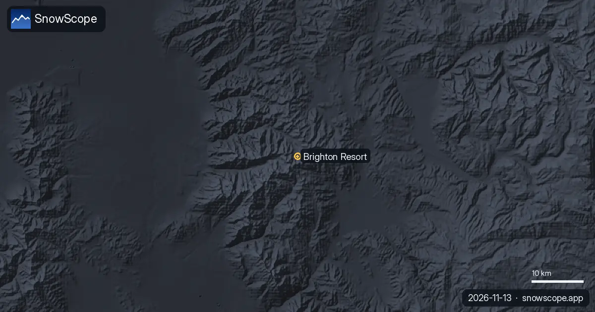

Brighton, Utah im Dezember: Canyon-Schnee schon ab 72 $
Brighton ist das, was dabei herauskommt, wenn man das Resort-Dorf überspringt und gleich bis ganz oben in den Big Cottonwood Canyon fährt. Nach unserer Schneehistorie ist es eine der sichersten Dezember-Wetten in Utah, und die Online-Tickets starten für Frühbucher bei 72 $.
Die Live-Schneeprognose für Brighton Resort in der SnowScope-AppSchneehöhen, Pulverschnee-Alarme und 3D-Karte, gratis.
Hohe Basis, kurze Anfahrt
Von Salt Lake City aus ist Brighton nur eine Canyon-Fahrt entfernt, mit einer Basis auf rund 8.750 ft (2.666 m) und Liften bis etwa 10.450 ft (3.185 m). Laut unserer Kartierung hat die Station 8 Lifte und rund 29 mi (47 km) Pisten. Diese Basishöhe erklärt im Dezember eigentlich alles: Der Schnee beginnt hier dort, wo viele Utah-Resorts aufhören.
Liegender Schnee erreicht im Median unserer 46 Winter meist Anfang Oktober die mittlere Höhenlage.

Dezember, Tag für Tag
Am 1. Dezember liegt die typische Schneehöhe auf halber Höhe, bei etwa 9.600 ft (2.925 m), bei 28 in (70 cm). Bis zum 15. Dezember steigt sie auf 37 in (94 cm), mit 27 in (68 cm) an der Basis und 45 in (115 cm) oben. Am Weihnachtstag erreicht die mittlere Höhenlage 48 in (122 cm).
In 89 % der vergangenen Winter lagen auf halber Höhe am 15. Dezember mindestens 20 in (50 cm), in 98 % mindestens 10 in (25 cm). Selbst ein schwacher Dezember, einer von zehn, brachte dort noch 20 in (52 cm).

Was es kostet
Brighton berechnet seine Tickets für 2026/27 dynamisch. Winter-Tageskarten starten bei 72 $, und der Rat des Resorts ist einfach: früh kaufen für den besten Preis. Feiertage und späte Käufe kosten mehr, hier nennen wir nur den Startpreis, den wir prüfen konnten.
Für einen längeren Aufenthalt lädt die Go Card drei, vier oder fünf Tageskarten auf eine Karte, mit bis zu 40 % Rabatt gegenüber dem vollen Tagespreis. Einen Dollarbetrag dafür konnten wir nicht finden, also lohnt sich ein Blick auf die Resort-Seite für die gewünschten Daten.
Brighton im Vergleich zu Park City und Beaver Mountain
Park City ist die berühmte Nachbarin gleich hinter dem Grat. An einem typischen 15. Dezember liegen dort auf halber Höhe 25 in (64 cm), und 72 % der Winter hatten 20 in oder mehr, deutlich unter den Werten von Brighton. Die Ticketpreise haben wir hier nicht verglichen.
Beaver Mountain, der familienfreundliche Hausberg bei Logan, verlangt einheitlich 75 $ für ein Erwachsenenticket, doch auf halber Höhe lagen dort an einem typischen 15. Dezember nur 22 in (57 cm), mit 57 % der Winter über 20 in. Brighton kostet etwa gleich viel, wenn man einen Tag zum Startpreis erwischt, bietet dafür aber deutlich mehr Schnee.
Hat sich die Vorsaison verändert?
Etwas schon. In den ersten 15 Wintern unserer Aufzeichnung (1980-81 bis 1994-95) lagen auf halber Höhe an einem typischen 15. Dezember 50 in (128 cm), und jeder Winter erreichte 20 in oder mehr. In den letzten 15 Wintern (2011-12 bis 2025-26) lag der Medianwert bei 27 in (68 cm), und 73 % kamen über 20 in. Der vergangene Winter brachte an diesem Datum nur 17 in (43 cm). Der Dezember in Brighton bleibt zuverlässig, nur eben nicht mehr ganz so sicher wie früher.
Tipps für Skifahrer
- Kaufen Sie online so früh wie möglich: den Startpreis bekommen die ersten Käufer.
- Meiden Sie die Feiertage Ende Dezember, wenn der Preis am wichtigsten ist.
- Im Big Cottonwood Canyon gelten bei Stürmen Traktionsregeln: Schneeketten mitnehmen oder mit Allrad und guten Reifen fahren, oder den Bus nehmen.
- Vor der Buchung eines späten Flugs einen Blick auf die Zwei-Wochen-Vorschau werfen: ein trockener Dezember kann die unteren Pisten ausdünnen.
Quellen und Nachweise
- Brighton Resort, lift tickets 2026/27 (official) www.brightonresort.com/lift-tickets
- Beaver Mountain, tickets and passes 2026-2027 (official) www.skithebeav.com/tickets-and-passes/
- OpenSkiMap (mapped lifts and runs) openskimap.org/
- avalanche.org, US avalanche centers and forecasts avalanche.org/
Zu diesen Zahlen
Schneewerte: SnowScope-Schneehistorie, 46 vergangene Winter (1980-81 bis 2025-26) auf den angegebenen Höhen (Tal, Mitte, Gipfel), eine höhenkorrigierte Rekonstruktion des früheren Schnees für eine Fläche (auf Basis von ERA5-Land; Snow_Hydro 1 km für Marokko), keine Meldungen des Skigebiets. Aktueller Schnee: die SnowScope-Schneekarte. Lifte, Pisten und Höhen: OpenSkiMap-Kartierung. Preise: die unten genannten offiziellen Seiten, gelesen am 13. November 2026; dynamische Preise ändern sich mit Datum und Nachfrage.
Offizielle Lawinenlageberichte: Utah Avalanche Center
Diesen Bericht zitieren
Für Forschung, Lehre oder Presse: Zahlen und Grafiken sind unter CC BY 4.0 mit dieser Quellenangabe frei nutzbar.
SnowScope (2026), Brighton, Utah im Dezember: Canyon-Schnee schon ab 72 $, https://snowscope.app/blog/de/2026/11/brighton-utah-december-lift-tickets-snow.html, abgerufen am 2026-11-14
SnowScope (Atlas Labs). (2026, November 14). Brighton, Utah im Dezember: Canyon-Schnee schon ab 72 $. SnowScope snow reports. https://snowscope.app/blog/de/2026/11/brighton-utah-december-lift-tickets-snow.html
BibTeX
@misc{snowscope2026brightonutahdecemberlift,
author = {{SnowScope (Atlas Labs)}},
title = {Brighton, Utah im Dezember: Canyon-Schnee schon ab 72 $},
year = {2026},
month = nov,
howpublished = {\url{https://snowscope.app/blog/de/2026/11/brighton-utah-december-lift-tickets-snow.html}},
note = {Published 2026-11-14 15:27 UTC; accessed 2026-11-14}
}· CC BY 4.0 · Methoden, Daten und Werkzeuge →
Brighton Resort: Schnee und Temperatur nach Höhe, dieser Winter vs letzter (Werkzeuge) →
Brighton Resort folgen
Gratis: eine Nachricht, wenn Neuschnee kommt, und jeden Morgen die Vorhersage.